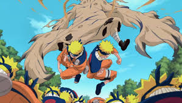
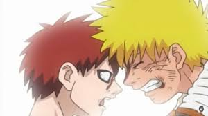
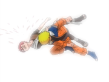

Sakura woke me up so we could pursue Sasuke, who was pursuing Gaara himself. We arrived in time for me to kick Gaara away before he could kill Sasuke. Partially transformed into Shukaku, Gaara knocked Sakura unconscious and bound her to a tree, forcing me to battle him, with little success. I had related to Gaara's painful life as a jinchūriki, but I was not willing to let anything to happen to Sakura and Sasuke. Determined to protect my friends, I created an army of shadow clones to relentlessly batter Gaara, forcing him to fully transform into Shukaku, to which I responded by summoning Gamabunta.
Gaara puts himself to sleep to give control of his body to Shukaku, forcing me and Gamabunta to figure out a way to end the jutsu. We did so by transforming into a giant fox to restrain Shukaku, allowing me to awaken Gaara with a solid punch to the face. Shukaku's influence disappeared, but Gaara regained control and traped me with his sand. I escaped by tapping into the Nine-Tails' chakra, and headbutted Gaara when he was close enough, destroying Shukaku's form. Exhausted from the fight, we leapt at each other for one final exchange, and I punched Gaara, claiming victory.
 We both fell to the ground, unable to move. Slowly crawling towards Gaara, I explained that I also suffered a painful and lonely life, but was later saved by having friends. To that end, I would do anything to protect them, even if it means killing Gaara. Understanding my true strength, Gaara retreated with Kankurō and Temari with a new outlook on life, while I passed out from exhaustion and was returned to Konoha with Sasuke and a rescued Sakura. During this incident, Third hokage gave his life to seal orochimaru's jutsus and save Konoha. A few days later, we attended the Third Hokage's funeral. 😭